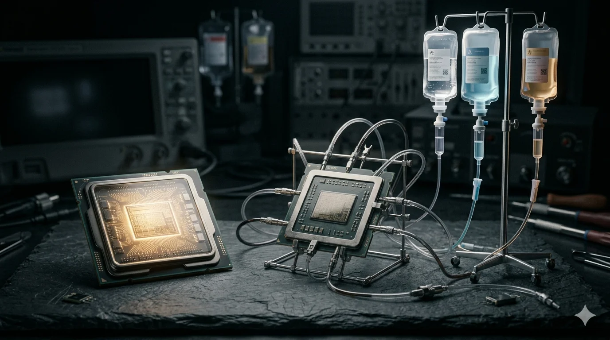

On May 19, 2026, Sundar Pichai stood on the Google I/O stage and made a claim that would have been science fiction when Google first ran its own AI chip in its data centers a decade ago. Gemini, he said, was now trained across more than a million of Google’s own Tensor Processing Units, distributed across data centers on multiple continents, stitched into a single logical cluster, with no Nvidia hardware anywhere in the loop. The chip that began life as an internal cost-saving project, a way to keep Google’s own search and translation workloads off other people’s silicon, was now training and serving one of the world’s frontier models end to end.
The same week, Amazon was telling a different story about its own decade-old silicon bet, though it was dressed in the same language. Trainium, Amazon’s custom AI chip, had “momentum.” Two of the largest AI labs in the world had committed to it. Andy Jassy told CNBC that “the two largest AI labs are both significantly betting on Trainium.” On paper, the two companies were making the same boast: our AI runs on our chips, not Nvidia’s.
Only one of those statements is load-bearing. The question that separates them is not who built a chip. Amazon and Google both did, starting at almost the same moment a decade ago. It is whose chip pulls its own demand, and whose chip has to have its demand bought for it.
The same bet
The two programs are almost exactly the same age. Google built its first TPU in 2015 to run its own neural networks more cheaply than it could on bought GPUs. That same year, Amazon bought Annapurna Labs, the Israeli design house behind its custom silicon: the Nitro networking chips first, then the Inferentia and Trainium AI chips that followed by the end of the decade. Both companies were chasing the same prize, and it is worth being precise about what that prize is.
Nvidia’s gross margin on AI hardware runs around 75 percent.[1] Every GPU-hour a hyperscaler sells carries that margin, paid to Nvidia. At the scale of AWS or Google Cloud, the arithmetic is brutal: the more AI compute you sell, the more of your customers’ money flows straight through your data centers and out to Santa Clara. Building your own chip keeps that margin instead of passing it along. The logic is identical for both companies.
What differs is what each company had to put on the other side of the equation, and that difference is the whole story. A custom chip is worthless without a workload to run. Silicon matures through use: each generation exposes the bottlenecks that the next generation fixes. The question for any custom-silicon program is: where does that workload come from? Google had an answer that Amazon did not.
Google made it
Google’s answer was Gemini. Because Google builds its own frontier model, it has a workload deep enough, demanding enough, and large enough to pull its silicon up the maturity curve generation after generation. The TPU did not have to win customers in a bake-off. It had to serve Google, and Google made sure each chip generation was shaped by what training and serving Gemini actually required.
The result, several generations in, is a chip line that has split to match the work. Google’s newest TPUs come in two variants: a training-optimized part and an inference-optimized part.[2] The training part is built for compute-bound pretraining, where Google claims roughly three times the per-pod performance of the prior generation, scaling near-linearly toward a million-chip logical cluster. The inference part handles the opposite problem: the memory-bound work of generating tokens one at a time, with 288 gigabytes of high-bandwidth memory and a large on-chip cache, tuned for the latency-sensitive serving that agentic workloads demand. This is the disaggregation of the inference problem into purpose-built hardware, and Google does it inside one chip family, on its own silicon.
The clearest evidence that the bet worked is in the pricing. When Google released Gemini 3.5 Flash in May 2026, it priced the model at $1.50 per million input tokens and $9.00 per million output tokens.[3] That was a threefold increase over the previous Flash generation. The model still undercut comparable frontier models on cost while claiming output speeds several times theirs. A company can only price like that if it owns its cost base. Google is not paying Nvidia’s margin on the tokens Flash generates; it is paying its own fabrication and power costs and amortizing its own chips. The price is proof that the silicon escape succeeded: Google has a cost floor that its GPU-dependent competitors cannot match, and it is beginning to use it as a weapon.
None of this required Google to buy a single customer; the demand was already inside the building. “Made it” means made it for Google’s own purposes — escaping Nvidia’s margin on a cost structure Google controls. Whether the TPU ever becomes a chip that other companies rent in volume is a separate and real question. But escaping the margin was the best, and Google has the receipts.
None of which makes Google’s books innocent. Alphabet booked an even larger markup last quarter than Amazon did: some $36.9 billion in gains on its own private-company stakes, including Anthropic and SpaceX, flattering net income the same way. The accounting game is industry-wide. But it is a separate game from the silicon. The difference is dependence: Google’s markup is gravy on a chip that already works and a cloud business growing fast, whereas Amazon, as the next section shows, leans on its markup to carry a quarter that the operating business did not.
Amazon had to anchor it
Amazon’s problem is that it has no Gemini. It acquired the silicon. Annapurna gave it the design talent, and Trainium is a real chip whose third generation is a genuine step up. What it could not acquire was a workload to pull that chip forward. So Amazon had to buy one. And the way it bought it gives the game away.
Consider the two labs Jassy points to. The first is Anthropic. Amazon has put roughly $8 billion into Anthropic since 2023, and in April 2026 committed up to $25 billion more. In return, Anthropic trains Claude on Trainium and has agreed to consume up to five gigawatts of the chips, housed partly in an $11 billion data center campus Amazon built for it in Indiana.[4] The second is OpenAI. In February 2026, Amazon committed up to $50 billion to OpenAI: $15 billion upfront in preferred stock, $35 billion more contingent on OpenAI completing an IPO or hitting undefined milestones. As part of the same deal, OpenAI agreed to consume 2 gigawatts of Trainium capacity, and AWS became the exclusive third-party cloud distributor for OpenAI’s enterprise platform, Frontier.[5]
Look at what each lab actually received in exchange for betting on the chip. Anthropic’s commitment sits on top of Amazon’s equity. OpenAI’s commitment came bundled with up to $50 billion and exclusive distribution rights to enterprise customers it could not otherwise reach through AWS. Neither commitment is a price-performance verdict on Trainium. Trainium has smaller customers who took no equity. The claim here is narrower and harder to wave away: itsflagship, frontier-scale demand, the demand Jassy cites as validation, was bought. The two anchor commitments are the consideration in much larger strategic deals, and in OpenAI’s case, the connection is not interpretive. Amazon’s own regulatory filing states that the equity investment and the cloud partnership are contractually linked: if the collaboration agreement terminates, the $35 billion equity commitment dies with it.[6] The money and the chip commitment are bound together in the contract.
The strongest evidence that this is procurement rather than merit is what these same labs do when money is not attached. OpenAI runs an aggressively multi-cloud strategy: it has a custom-ASIC deal with Broadcom, buys Nvidia GPUs through multiple clouds, and has committed to AMD. In the same round that included Amazon’s $50 billion investment, OpenAI committed to 5 gigawatts of Nvidia’s next-generation systems, more than twice its Trainium commitment.[7] When OpenAI allocates compute on the merits, it goes substantially to Nvidia. The Trainium slice is the one with Amazon’s equity stapled to it.
And salvage it
Anchoring the chip to bought demand is the first move. The second is admitting it cannot finish the job alone. In March 2026, AWS announced a partnership with Cerebras to deliver fast inference through its Bedrock platform. The architecture is revealing. Trainium handles “prefill”: reading and digesting the prompt, the fast-parallel part. Cerebras’s wafer-scale chips handle “decode”: writing the answer back one token at a time, the slow sequential part that determines how fast a response feels. There, Cerebras claims an order-of-magnitude speed advantage over conventional hardware.[8] One industry analyst put the implication plainly: by splitting inference across two companies’ chips, “AWS is betting that no single chip architecture can win alone.” That is a precise description of an admission. Amazon went outside its own silicon for the half of inference that matters most for the agentic, token-hungry workloads everyone is racing toward. Google does not hand the decode stage to a third party’s silicon; it builds its own inference chip.
The third move is in the financials, and it is the one that turns the argument into evidence. If Trainium were winning on merit, Amazon’s chip strategy would show up as cash: customers paying for compute, margin retained instead of forwarded to Nvidia. Instead, the most important number Amazon’s chip strategy produced last quarter was an accounting entry.
In the first quarter of 2026, Amazon reported net income of $30.3 billion, up 77 percent year over year, a headline blowout. But $16.8 billion of the pre-tax income behind it was a non-cash, non-operating gain: the markup on Amazon’s Anthropic stake, triggered when Anthropic’s latest funding round reset the valuation, and Amazon revalued its holding.[9] After tax, that single mark-to-market entry was larger than Amazon’s entire year-over-year increase in net income: the company’s headline profit growth was, in effect, the markup. Strip it out and roughly $23 billion of pre-tax income remains, up from the prior year but unspectacular. The gain itself cost nothing and produced nothing. Under the accounting rule that governs it, the gain reverses only if a future Anthropic transaction reprices the stake downward, or the holding is impaired — not a number Amazon can spend, and one that can run backward as easily as forward.[13]
Now set that against the cash. Over the trailing twelve months, Amazon’s free cash flow fell to $1.2 billion, down 95 percent from $25.9 billion a year earlier. Net capital expenditure over the same period climbed to roughly $147 billion, the overwhelming majority of it AI infrastructure.[10] The company posting record AI-era profit is generating almost no free cash, and the profit growth that made the headline is a revaluation of a startup Amazon itself funds and supplies.
The cash collapse, to Amazon’s credit, is largely a choice, not distress. Free cash flow fell because Amazon elected to spend roughly $147 billion on AI infrastructure, and the operating business underneath is healthy: AWS grew 28 percent year over year, its fastest in several quarters, and segment operating income rose. A company can spend its cash flow into the ground on purpose and be sound. So the depressed cash is not, by itself, the indictment. The indictment is narrower: the profitgrowththe market celebrated came from none of that operating strength. It came from marking up a private stake. Strip the Anthropic gain and the quarter was solid and unspectacular. The blowout was an accounting event.
This is the circuit that holds the salvage together. Amazon invests equity in Anthropic; Anthropic commits to spend on Trainium and AWS. That spending returns as AWS revenue and as evidence of Trainium “traction”. Anthropic raises its next round at a higher valuation. Amazon marks up its stake and books the gain as profit. Each loop raises the mark. The chip’s flagship demand and the quarter’s profit growth trace to the same root: the roughly $8 billion Amazon had invested in Anthropic by the time the stake was marked. The capital goes out as investment, returns as Trainium and AWS revenue, and then appreciates. The appreciation on that stake, not any cash Anthropic paid out, is what carried net income to a record. The money does double duty: once as evidence of silicon momentum, once as reported profit. It is an unusual position — being able to influence the marked value of your own largest asset by doing business with it.[11]
Why one made it and the other didn’t
The difference between the two companies is not intelligence or execution. It comes down to a single asset that cannot be faked: a captive frontier workload. Google’s TPU is pulled up the maturity curve by a model that uses it on the merits, paid for by Google’s own economics, answerable to no outside buyer — captive-demand pull. Amazon’s Trainium is pushed forward by tenants it bought with equity and distribution — procured-demand push. The two can look identical in a press release (”the largest labs run on our chip”), but one is a workload choosing the best tool it has, and the other is a tool that had to purchase its workload.
This is why the same test that condemns Trainium clears the TPU. Both chips are attractive partly because Nvidia is scarce and expensive, but that is not the distinction. The distinction is the counterfactual. Strip away the scarcity premium, and Trainium loses its rationale. Its demand was assembled to fit the shortage: anchor tenants routed to it by equity, overflow capacity so tight that Jassy says Amazon is considering selling racks directly.[12] Strip the same premium from the TPU, and Google still has a frontier model running on it every day, for reasons that have nothing to do with GPU availability. Captive demand survives the counterfactual. Procured demand does not.
The mirror
This is the inverse of a pattern this newsletter has traced before. In “Compute Equals Commitments,” the dynamic was a chipmaker funding its own customer’s purchases — round-trip revenue dressed as demand. Here the same financial structure appears one layer up: a cloud provider funding the labs that validate its chip, and booking the resulting equity markup as profit. The round trip is the same; only the layer has moved. The Annapurna bet was the right instinct — Amazon was early to see that owning the silicon mattered. It was just never able to feed the chip the way Google feeds the TPU.
What would have to break
The honest case against this verdict rests mostly on OpenAI, and it deserves a fair hearing. OpenAI is not a captive Amazon subsidiary; it is a genuinely multi-cloud lab that could have said no. Its willingness to put two gigawatts on Trainium is a real data point, and if Trainium were worthless, a company with OpenAI’s options would not have agreed to run on it at all. That is true, and the piece concedes it: the chip is not bad. But “not bad” is not “won.” OpenAI’s commitment came stapled to up to $50 billion in Amazon investment — $15 billion of it funded so far, the rest contingent on an IPO that has not happened — and to exclusive enterprise distribution. Its merit allocation, the five gigawatts of Nvidia capacity in the same round, went elsewhere, more than twice the Trainium commitment. Procured is not coerced, but neither is it chosen on the basis of price-performance.
So the verdict is falsifiable and worth stating in terms that could fail. If Trainium wins a large frontier customer that is neither funded by Amazon nor bundled with distribution it cannot get elsewhere, the salvage thesis weakens. If the Cerebras dependency ends because a future Trainium wins the decode stage outright, one of the three tells falls. If Amazon’s free cash flow recovers while the Anthropic markup stays flat — proving the operating business stands on its own — the financial tell dissolves. And if Google’s TPU never escapes its own data centers to win external cloud customers, then “made it” is too strong, and Google has merely built an excellent internal tool rather than a competitive product. Each of those is a real possibility, and each would move the verdict.
But on the evidence available now, the two-decade-old silicon bets have not converged. Google built a chip that its own frontier model pulls forward, prices its products off a cost base it owns, and needs far less outside capital to keep improving. Amazon built a chip that it must supply with purchased tenants, finish with a rented decode engine, and validate with an accounting gain while its cash disappears into the build-out. Both companies can say their AI runs on their own silicon.
Only one of them is telling you the whole sentence.
Notes
[1]NVIDIA Corp, Form 10-Q for the quarter ended April 26, 2026(Q1 FY2027): GAAP gross margin 74.9%; full fiscal 2026 GAAP gross margin 71.1%. NVIDIA does not separately disclose a Data Center segment gross margin; with Data Center at ~92% of revenue, the consolidated figure is the best available proxy, and the “~75%” in the body refers to that consolidated GAAP margin.
[2] Google Cloud,“Ironwood is here: our eighth-generation TPU for the agentic era”(April 2026). Specifications are vendor-published and not independently benchmarked: ~3× per-pod performance and near-linear scaling toward a million-chip logical cluster (training part); 288 GB high-bandwidth memory and on-chip cache (inference part); up to 2× performance-per-watt. Treat as vendor specifications.
[3] Google,official Gemini API pricing(ai.google.dev, updated May 19, 2026): Gemini 3.5 Flash at $1.50 / million input tokens, $9.00 / million output tokens (incl. thinking tokens), $0.15 / million cached input tokens — roughly 3× the prior Flash generation’s list pricing. The “undercuts comparable frontier models / several times the speed” framing is Google’s own, presented at I/O, and the speed comparison is vendor-claimed.
[4] Amazon’s Anthropic investment: ~$8 billion in tranches from September 2023 (initial $1.25B; $4B completed March 2024; further $4B announced November 2024), initially convertible notes, partially converted to equity. On April 20, 2026,Amazon committed up to $25 billion more— $5 billion immediately (at Anthropic’s $350B valuation), up to $20 billion tied to commercial milestones. The Q1 2026 markup discussed below was on the ~$8B already invested; the additional commitment closed after quarter-end. The up-to-five-gigawatt Trainium commitment and the ~$100B AWS spend are Anthropic commitments to consume AWS/Trainium capacity.Project Rainier(Indiana; ~500,000 Trainium2 chips scaling toward 1 million, $11B site) is the dedicated buildout.
[5]OpenAI, “OpenAI and Amazon announce strategic partnership”(Feb 27, 2026): $50 billion total Amazon investment, $15 billion initial (OpenAI Series C Preferred Stock), $35 billion contingent; OpenAI to consume 2 GW of Trainium; AWS as exclusive third-party cloud distributor for OpenAI Frontier. See alsoAmazon Form 8-K, EX-99.1 (Feb 2026).
[6]Amazon Form 8-K (Feb 2026)and accompanying agreement disclosure: the equity investment and cloud partnership are contractually linked; the $35 billion contingent equity commitment (stated as $34,999,999,447.98) terminates if the Joint Collaboration Agreement terminates, and is contingent on conditions including an OpenAI IPO or direct listing, expiring if not invested by Dec. 31, 2028.
[7]OpenAI’s $110 billion round(Feb 27, 2026; $730 billion pre-money) included $30 billion each from NVIDIA and SoftBank alongside Amazon’s $50 billion; OpenAI’s NVIDIA commitment in connection with the round was 5 GW of Vera Rubin-generation capacity, versus 2 GW of Trainium. OpenAI’s separate Broadcom custom-ASIC and AMD commitments are company-announced.
[8]AWS and Cerebras, “AWS and Cerebras Collaboration Aims to Set a New Standard for AI Inference”(March 13, 2026): AWS Trainium optimized for prefill,Cerebras CS-3 optimized for decode, connected via Elastic Fabric Adapter, delivered exclusively through Amazon Bedrock. Cerebras’s decode speed advantage is vendor-claimed. The “no single chip architecture can win alone” reading is an analyst characterization, not AWS’s.
[9]Amazon Form 8-K, EX-99.1, Q1 2026(quarter ended March 31, 2026): “First quarter 2026 net income includes pre-tax gains of $16.8 billion included in non-operating income from our investments in Anthropic.” Income before income taxes was $39.834 billion; $16.8B / $39.834B = 42.2%. (Some contemporaneous reporting characterized the gain as “more than half” of pre-tax income; the filing figure is ~42%.)
[10]Amazon Form 8-K, EX-99.1, Q1 2026. Headline “Free cash flow” line (TTM operating cash flow less purchases of property and equipment): $1.232 billion for the TTM ended March 31, 2026, versus $25.925 billion a year earlier. Amazon publishes alternative FCF measures that differ; the headline line is used here. TTM net property-and-equipment purchases ~$147 billion. AWS Q1 2026 revenue grew 28% YoY with segment operating income up, per the same release.
[11] On the structural point — that a company can influence the marked value of an asset through its own business dealings with the issuer — see the disclosure mechanics in Amazon’s Q1 2026 Form 8-K [9] and the ASC 321 measurement-alternative note [13]. The characterization is the author’s, drawn from the filing’s own description of the Anthropic gain.
[12] Andy Jassy,Amazon Q1 2026 earnings commentary and CNBC interview(Feb 27, 2026): Trainium demand sufficiently high that AWS was considering selling Trainium racks directly; “the two largest AI labs are both significantly betting on Trainium.” AWS reported 28% YoY revenue growth in Q1 2026, perAmazon’s Q1 2026 results.
[13] Equity stakes in private companies such as Anthropic are generally accounted for underASC 321’s measurement alternative: carried at cost and remeasured to fair value only on an observable transaction (e.g., a new funding round) for similar securities of the same issuer, or on impairment. An up-round markup is unrealized and non-cash; it can reverse on a later down round or impairment, and becomes cash only when realized through a sale or liquidity event.